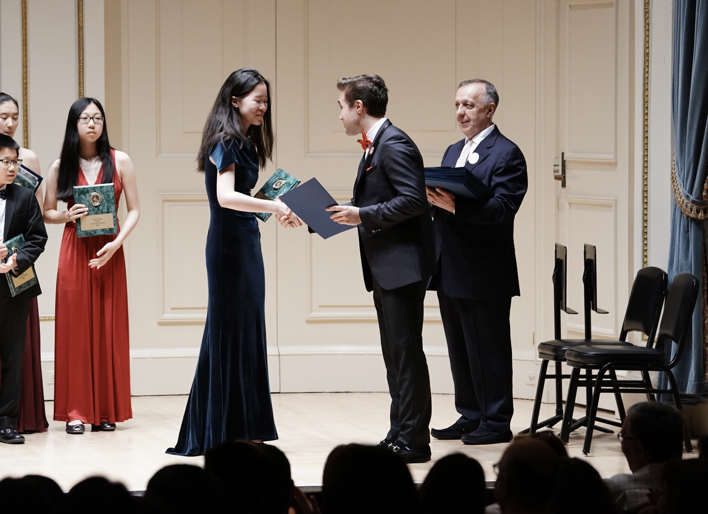

Guzheng

I play an ancient Chinese instrument called the guzheng, and have performed as an artist of the Washington Guzheng Society. I’ve performed from private homes to public live broadcasts and even at Carnegie Hall (please ignore my poor posture lol), and have been certified by the China Conservatory of Music as a Level 10 guzheng artist.
The guzheng, also known as the Chinese zither, is a 21-string table harp. You play it by plucking the strings with picks taped to your fingers. You can also change the sound by pressing down on strings for vibrato or by where you pluck on the instrument. Some more contemporary pieces employ slapping and knocking on the guzheng which can be more rhythmically fun!
Check out my music resume, Soundcloud or YouTube channel for more recordings.